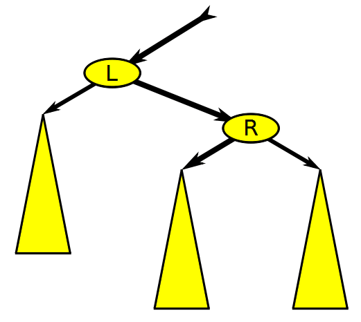

Day 20: More RB-Trees and Nearest Neighbor Search
Red-Black Tree Insertions
Last class we learned about the concept of binary search trees (BSTs) and how the notion of balance is crucial to obtaining good performance.
We saw, in detail, one particular type of self-balancing binary search tree called a Red-Black tree. Red-Black trees maintain balance by performing rotations to move subtrees with greater height up the tree and subtrees with lesser height down the tree (thereby equalizing the overall height of the tree).
 Source: Wikimedia Commons
.gif){kind=link}
We saw that red-black trees work by enforcing four invariants with respect to the nodes in the tree.
- Each node in the tree is colored either red or black.
- The root is black and each of the (null) leaves are black.
- If a node is red, then both its children are black.
- The number of black nodes encountered on any path from the root to a leaf (null) is equal.
When inserting nodes into an RB-tree we follow the following process:
- Insert the node into the appropriate location in the tree (based on the BST property) and color it red. Question for the class: which of the four properties above could be violated after this step?
- Match the current state of the tree to the one of three cases. Perform a remedial action (recoloring and/or rotation) based on the specific case.
- Check to see if there are additional violations higher up the tree.
 Source: CLRS textbook
Source: CLRS textbook
Problem 1 Above is the result of inserting the node 4 into the RB tree. Note what transformations to the tree were performed at each step.
Problem 2 At each step, argue that the modification to the tree moves the potential violation closer to root while removing the violation farther from the root. Consider the application of case 2 and case 3 to be a single step for the purposes of this question.
Nearest Neighbor Search
Nearest neighbor search (NNS), as a form of proximity search, is the optimization problem of finding the point in a given set that is closest (or most similar) to a given point. Closeness is typically expressed in terms of a dissimilarity function: the less similar the objects, the larger the function values. – Wikipedia page on Nearest Neighbor Search
This algorithm is handy in a wide variety of data analysis, computer graphics, video game, computer vision, and machine learning tasks. Specific examples include data classification, clustering, template matching, and photogrammetry.
The nearest neighbor algorithm consists of a set of training points $x_1, \ldots, x_n$ with each $x_i \in \mathbb{R}^d$ (i.e., each point has $d$-dimensions).
Given a query point, $x_q$ (with $x_q \in \mathbb{R}^d$), the nearest neighbor is defined as the closest point in our set of training points, where closeness is given by some distance function. The distance function could be Euclidean distance, Manhattan distance, or something more exotic.
Problem 3 What is the time complexity of finding the nearest neighbor to the query point in terms of the number of training points $n$ and the dimensionality $d$ of the data?
KD-Trees
Given the fact that we were able to dramatically speed up our search for the closest point in 1-dimensions with the Red-Black tree, it is natural to ask the of question of whether there is a way to use the same ideas to speed up the search for the nearest neighbor to some query point. The answer to this question is “yes… maybe”. Next, we’ll see a structured called KD-trees, which can, in some conditions, speed up nearest neighbor search.
I’ll go through the ideas on the board. A nice visualization of the algorithm is shown in this video.
KD-Trees in Practice
While KD-Trees might seem like a golden-ticket, they do not perform well when the number of data points is too close to the number of dimensions. In fact for KD-trees to work well, you want $n \gg 2^d$.
I have put together a Colab notebook that allows you to play around with various dataset sizes ($n$) and different data dimensionalities ($d$) to see how the performance of KD-trees compares to traditional nearest neighbor matching.
Approximate Nearest Neighbor (ANN) Search
You might ask whether there is a way to get a speedup to your nearest neighbor search even when the data dimensionality is large. It turns out that there is a very active field of research into approximate nearest neighbor search (ANN). If you are willing to live give up the guarantee that the value returned will always be the closest point, you can get a substantial speedup.
The graph linked on this page shows the recall rate and the number of queries per second for a given algorithm. In this experiment, recall means the probability that one of the actually 100 nearest neighbors to a point was included in the list of the 100 nearest neighbors returned by a particular ANN algorithm (1.0 is perfect). Higher queries per second (y-axis indicates better efficiency).
How do these techniques work? It is an area that I don’t have a lot of familiarity with, so I can only tell you a bit (maybe this could be a topic for an individual deep dive?). One technique that I did want to highlight since it touches on the course material, is locality-sensitive hashing. There is a really nice writeup of doing locality-sensitive hashing on text data at Pinecone.io. Disclaimer: I didn’t get through the entire thing yet.
The one thing I wanted to highlight is the difference between locality-sensitive hashing (LSH) and the sort of hashing we do in the creation of a hash map. In direct opposition to what you want in creating a hash map, In the case of LSH you want to maximize the chance of collision (when you have similar data). By maximizing collisions between similar inputs, you have a chance can quickly narrow down your nearest neighbor search by applying your hash function and looking in the returned bin.